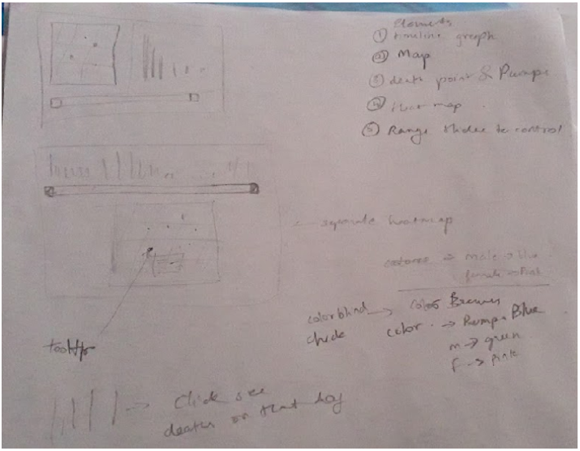

Overview
The dataset that was used is the ARIES vehicular crash data provided by the Indiana State Police. The data dated from 2007 through 2018 (and now includes 2019) and provides details about each car accident that happened in the entire state. Each year has a corresponding .csv file where each row represents an individual that was involved in a vehicular crash including information that pertains only to that certain individual outlined by 107 features. Since multiple people can be involved in each crash, certain rows may provide details of the exact same crash. All 107 features provided in the .csv files were not necessary to address the questions we had in mind when designing this visualization. The 107 features were reduced to 20 and a simple index was included for ease of indexing later in coding the visualization. Small corrections on the schema and combining all of the years into a single .csv file was done with Python. Features used for analysis include: index, crash identification number, role of the individual, gender, age in predetermined groups, county, date, day of the week, month, time, number of injured, number of deaths, latitude, longitude, weather code, speed limit, road type, road name, injury status, and cause. Index: Numerates the crash incidents chronologically with the oldest crash being 1. CrashID: Each crash was designated a specific crash identification number that could link each individual to the vehicular crash Role: The role of the person described in the instance within the .csv. It would designate the driver, passenger, pedestrian, etc. involved in the crash. Gender: Whether the individual was male or female. Age: Age was broken into distinct age groups that spanned 10 years each. County: The county code where the crash took place. Each crash was within Indiana. Date: Mm/dd/yyyy format of date of the crash. Time: Hh:mm AM format of the time of the crash. Injured: Number of people injured in the crash associated with the individual described by the instance Deaths: Number of people who died in the crash associated with the individual described by the instance Latitude: The latitude of the crash to 6 decimal places. Longitude: The latitude of the crash to 6 decimal places. Weather: An integer corresponding to a weather condition at the time of the crash Speed_Limit: The speed limit at the location of the crash or the nearest defined speed limit. Road_Type: Type of road where the crash took place or the nearest road to the crash site. Road_Name: Name of road (or roads if at an intersection) where the crash took place Injury_Status: The severity of the injury of the individual Cause: Set list of options briefly describing the cause of the crash
Questions
The overall question that the visualization was supposed to address was where many vehicular crashes happen in order to learn more about the areas where they are clustered. Including the causes of the crash can also provide additional information on issues that may need to be addressed. This may help identify problem areas in urban planning and provide a starting point for diagnosing issues and correcting them with the intent of minimizing vehicular crashes across the state. In addition to locating sites where vehicular crashes are frequent, profiling aggregate data over time could provide insight on who causes wrecks in the state with what frequency with regards to age groups and gender. The time data that is provided can create a profile over days, months, and years and identify what times have more vehicular crashes occurring than others. These topics combined will hopefully provide a generalized profile of vehicular crashes in Indiana and address the questions of where, who, and when these incidents occur. Visualization Overview The visualization idea was built around a Google Maps view (GMV) of Indiana with each vehicular crash plotted on top of the view. It was initially supposed to contain all of the crash points in the entire state of Indiana, but it became quickly apparent that the GMV was going to limit the number of points that were able to be plotted to around 500 before quickly losing practical functionality. In order to filter the vehicular crash data down to a manageable number of data points, the data was limited to deaths in Marion and Hamilton county from 2015-2018. An added characteristic was added later to distinguish interstate vehicular crashes from non-interstate vehicular crashes. Blue points on the GMV correspond to deaths on the interstate and red is non-interstate. Another feature that was included in the GMV was the tooltip that provides a summary of features upon hovering over a given crash site. The GMV was designed to address where vehicular crashes happen. Bar charts, histograms, and needle charts contain data that corresponds to the graphed points on the GMV and provide a different way of viewing the data and create a different dimension of insight. Age and gender are important factors when profiling people who are dying in vehicular crashes. Bar charts and pin charts can show the aggregated data and operate as filters that can interact with both the GMV and other charts illustrating data. In the final visualization, gender was removed because it was nearly split 50/50 which doesn’t provide a lot of interesting information, and the additional graphic was cluttering up the view. Days of the week are also represented by an interactive bar chart. These visualizations help provide insight to answer when deadly crashes happen and to whom. A tooltip was included in on the needle chart that provides specific data to the date which each ‘needle’ represents. This helps mitigate the problem of needle charts where they become more of an eye exercise and lack more information. Calendar filters and time slides will filter the data by date and time of day. This will allow users to evaluate all dates determined by the calendar drop down filters at a certain window of time filtered by the time slide. It is presumed that certain times of the day and certain days of the week will be more likely to cause vehicular crashes than others. In the final visualization, the time slide for hours was not functional, so a drop down/write in text bar was used to determine the time of day filter. These filters help answer when deadly crashes in Marion and Hamilton county.
Observations
Plotting the vehicular crash deaths from 2015-2018 in Marion and Hamilton county shows that most of these incidences occur within the I-465 belt around downtown Indianapolis in Marion county. This was expected since there are more drivers within that area than anywhere else plotted in the GMV. As discussed in lessons this semester, this may reflect more of a population density graph than an area of highest probability for deadly vehicular crashes. This answered the question of where these incidents occur. Previewing the distribution between male and female drivers in whose role was ‘driver’ showed that they were equally likely to cause a deadly vehicular crash. Since the are equally likely, that visualization was left off of the final product. The age bar charts show that most of the crashes involve people ages 15-65 years of age (70% of crashes) with 25-34 year olds being the largest individual age group (21% of crashes). These two observations help profile who are involved in these vehicular crashes. The distribution made by the days of the week bar chart show that more deadly vehicular crashes occur on Friday and Saturday than any other day of the week which was expected because of weekend bar drinking and large events that occur on Fridays and Saturdays. Using the time filter showed that most crashes happen during the night and early morning which was expected since there is low visibility and it is more likely that an individual will drive under the influence at late hours. These observations help profile when these vehicular crashes will take place.
Sketch Art
